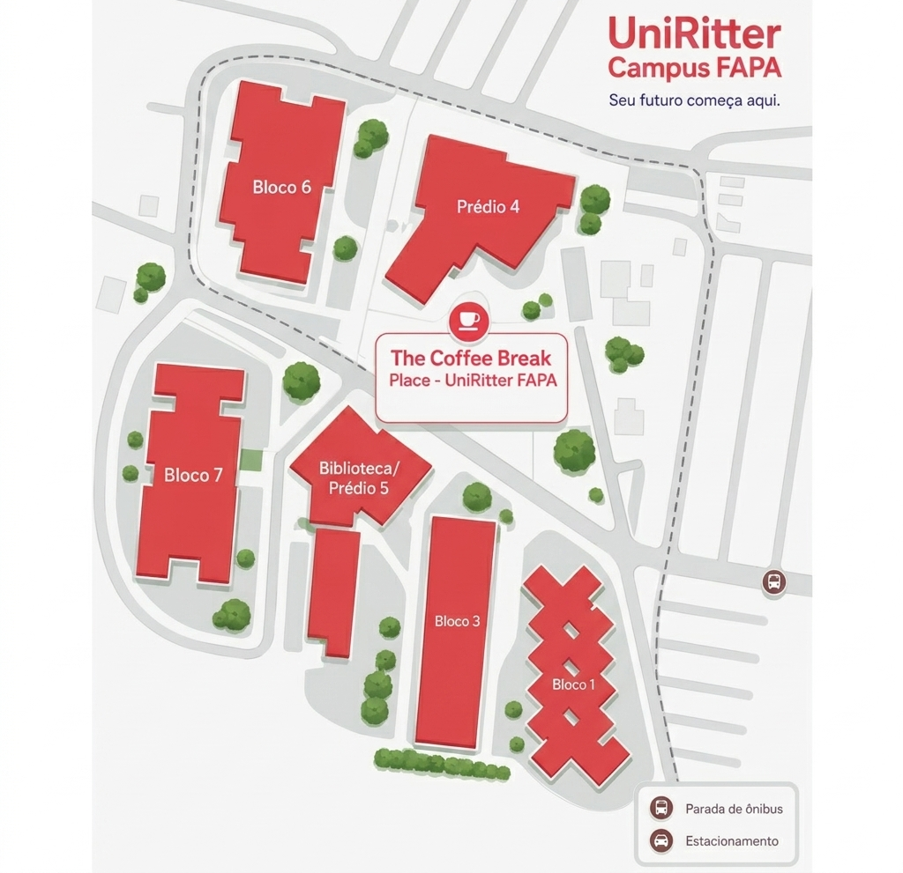

Os coletores de resíduos estão distribuídos em diferentes áreas do campus FAPA/UniRitter. Consulte o mapa abaixo e identifique o local adequado para cada tipo de descarte.

As lixeiras destinadas ao lixo seco estão localizadas próximas às principais entradas e saídas do campus. Além disso, há diversos coletores distribuídos pelos edifícios. Geralmente, essas lixeiras são identificadas pelas cores azul ou verde, pelo símbolo de reciclagem ou pela indicação "Lixo Seco".
As lixeiras para resíduos orgânicos costumam estar posicionadas ao lado das lixeiras de lixo seco. Elas são identificadas pelas cores marrom ou preta, pelo símbolo de restos de alimentos ou pela indicação "Lixo Orgânico".
Os recipientes destinados a resíduos sanitários estão localizados nos banheiros dos edifícios, geralmente próximos às pias ou aos sanitários.
Atualmente, não há um ponto permanente de coleta de lixo eletrônico em funcionamento no campus FAPA/UniRitter. No entanto, existem alternativas gratuitas próximas à universidade para o descarte correto desses materiais.
As principais opções incluem:
Os coletores para resíduos hospitalares não estão disponíveis ao público em geral. Eles são utilizados principalmente no Complexo Médico Veterinário, localizado no Bloco 3, e seu uso é controlado pelos responsáveis técnicos da área, seguindo normas específicas de biossegurança.